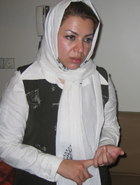
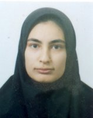

پذيرش > تریبون > گفت و گو > نگین شیخ الاسلامی: روناک تنها دغدغه اش زنان است
 گفتگو با مسئول انجمن زنان آذرمهر کردستان درباره فعالیت های روناک صفازاده و انجمن آذرمهر گفتگو با مسئول انجمن زنان آذرمهر کردستان درباره فعالیت های روناک صفازاده و انجمن آذرمهر

 نگین شیخ الاسلامی: روناک تنها دغدغه اش زنان است نگین شیخ الاسلامی: روناک تنها دغدغه اش زنان است
26 مهر 1386 - - نسخه قابل چاپ
از میان اعضای کمپین که در گوشه و کنار این خطه پهناور به کار آگاهی رسانی مشغول هستند، روناک صفازاده را بیشتر در پی دستگیری اش شناختیم. شنیدیم که این نسل پنجمی پرشور کردستان، زندگی اش را و دغدغه اش را صرف تغییر موقعیت زنان منطقه اش کرده است. برای شناخت بیشتر او و فعالیت های انجمنی که در آن مشغول است یعنی انجمن زنان آذر مهر کردستان با موسس این انجمن نگین شیخ الاسلامی، گفتگویی انجام داده ایم. نگین شیخ الاسلامی لیسانس ادبیات و فوق لیسانس روزنامه نگاری است.

از روناک برایمان بگویید؟
 روناک 5 سال است که در انجمن فعالیت می کند. سالی که دیپلم گرفت توسط دختردایی هایم که عضو انجمن هستند با انجمن آشنا شد و در کلاس های آموزشی انجمن شرکت کرد. ما برای همه اعضای جدید و علاقه مند یکسری کلاس های آموزشی مثل تاریخ زن، بررسی وضعیت زن در طول تاریخ، جنبش زنان، بررسی فیزیولوژیک زن ... می گذاریم .در واقع سعی می کنیم کاری کنیم که دختران و زنانی که می خواهند در باره زنان فعالیت کنند اطلاعات اولیه را داشته باشند. روناک هم وقتی آمد به همین شیوه درکلاس ها شرکت کرد و بعد شروع کردبه فعالیت در انجمن، با فعالیت های زنان آشنا شد، شروع کرد به دیدن واقعیت های تلخ زندگی. از زندگی پردرد و رنج مادرش تعریف کرد، از وضعیت تبعیض آمیز زنان اقوامش، از زنان همسایه که از شوهرانشان به شدت کتک می خوردند. به این ترتیب جذب کار زنان شد و دیگر این عرصه را ترک نکرد.می گفت باید کاری کرد. بعد از دوسالی هم که دانشجو بود دیگر تصمیمش را گرفته بود . گفت می خواهم فعالیتم را در زمینه زنان ادامه دهم. گفتم ادامه تحصیل نمی دهی؟ گفت جامعه بیش از مدرک به چیزهایی دیگری احتیاج دارد . روناک 5 سال است که در انجمن فعالیت می کند. سالی که دیپلم گرفت توسط دختردایی هایم که عضو انجمن هستند با انجمن آشنا شد و در کلاس های آموزشی انجمن شرکت کرد. ما برای همه اعضای جدید و علاقه مند یکسری کلاس های آموزشی مثل تاریخ زن، بررسی وضعیت زن در طول تاریخ، جنبش زنان، بررسی فیزیولوژیک زن ... می گذاریم .در واقع سعی می کنیم کاری کنیم که دختران و زنانی که می خواهند در باره زنان فعالیت کنند اطلاعات اولیه را داشته باشند. روناک هم وقتی آمد به همین شیوه درکلاس ها شرکت کرد و بعد شروع کردبه فعالیت در انجمن، با فعالیت های زنان آشنا شد، شروع کرد به دیدن واقعیت های تلخ زندگی. از زندگی پردرد و رنج مادرش تعریف کرد، از وضعیت تبعیض آمیز زنان اقوامش، از زنان همسایه که از شوهرانشان به شدت کتک می خوردند. به این ترتیب جذب کار زنان شد و دیگر این عرصه را ترک نکرد.می گفت باید کاری کرد. بعد از دوسالی هم که دانشجو بود دیگر تصمیمش را گرفته بود . گفت می خواهم فعالیتم را در زمینه زنان ادامه دهم. گفتم ادامه تحصیل نمی دهی؟ گفت جامعه بیش از مدرک به چیزهایی دیگری احتیاج دارد .
انجمن چه فعالیت هایی داشته است و روناک چه می کند؟
ما در 1377 از وزارت کشور و استانداری برای مجوز اقدام کردیم، و در عین حال فعالیت می کردیم تا این که سال 1380 به ما مجوز دادند. قبلا مکانی اجاره ای داشتیم که یک مغازه بود و ماهی 50 هزار تومان اجاره می دادیم، اما حالا درخانه تشکل ها دفتر داریم. در دفتر انجمن یک کتابخانه راه اندازی کرده ایم، به رمان خوانی و نقد وبررسی کتاب می پردازیم. با این کارزنان می توانند در جمع صحبت کنند و اعتماد به نفس شان را زیاد کنند.
بخش دیگر کارهایمان در روستاست. روناک با چند نفر دیگراز بچه های انجمن برای کار در روستاها و برپا کردن کتابخانه سیار در روستاها داوطلب شدند. از آبادی حسن آباد شروع کردیم، کلاس تاریخ زن و کلاس های روان شناسی برگزار کردیم. کردستان طوری است که همه افرادی که در آن زندگی می کنند یک جوری به این روستاها وصل هستند. مثلا روستای حسن آباد را برای این انتخاب کردیم که یکی از اعضای ما ساکن آنجا بود یا آشنایانی داشت. خوب ما می رفتیم با مسجد محل و مسئولان کتابخانه ای که در روستا بود صحبت می کردیم و محل را در اختیار ما می گذاشتند. زنان می آمدند، با هم حرف می زدیم، و درد دل های زنان سرباز می کرد.انتظار نداشتیم که تحول عظیمی در لحظه بروز بدهد اما می دانستیم در درازمدت می شود. لااقل مادرانمان می توانستند دانسته هایشان را در زندگی بچه هایشان اعمال کنند، با بچه ها درد دل کنند و بلاخره خیلی از عقده های روانی را تخلیه کنند.
آموزش زبان مادری هم بخشی از کارهای ما بود. یادگیری زبان برای مادران مهم بود چراکه می توانستند به بچه هایشان بهتر آموزش دهند. هفته ای یک روز آموزش زبان کردی درروستای حسن آباد داشتیم . 8 مارس را هم در روستاها برگزار کردیم. روناک برای خیلی از مادران روز جهانی زن را توضیح داد، برای آنها لوح تقدیردرست کرد وبه آنها تقدیم کرد. چون مرکز هر روستا مسجد است و شوراها در مسجد جمع می شوند همه این برنامه ها در مسجد و کتابخانه محل برگزار می شود.
روستای دیگر سارا غامیش بود که در آنجا هم با مادران ارتباط داشتیم . برنامه دیگرمان بیشتر برگزاری جلسات انسان شناسی برای شناخت زن کرد، نقطه قوت ها و ضعف هایش بود. من خودم به اورامان رفتم و برنامه هایمان را با استانداری درمیان گذاشتم تا هیچ انگ سیاسی به ما نچسبانند چون محیط کردستان جایی است که احزاب در آن فعالیت می کنند وما فقط می خواستیم با توجه به فرهنگ اجتماعی کردستان، زنان جامعه و مشکلات مان را بشناسیم.
در بررسی هایتان به چه مواردی می پردازید؟
بیش از همه تبعیض ها و خشونت هایی را که بر زنان می شود دنبال می کنیم. مثلا وقتی رفتیم اورامان و با زنان مصاحبه کردیم چیزی که متوجه نشده بودیم و حتی خودشان هم نمی دانستند عمومیت داشتن ختنه بود. اصلا انتظار چنین چیزی را نداشتیم. زنان در اورامان بسیار فعال هستند، سالارند و همه کاره زندگی هستند. اما در چنین منطقه ای می بینیم که ختنه رایج هست و به عنوان یک خشونت پنهان مطرح است. اصلا خودشان هم خیلی از مشکلات جسمی وبیماری های شان را از ختنه نمی دانستند و می گفتند این سنت فاطمه و عایشه است. وقتی با زنان و مادران حرف می زدیم و می گفتیم از نظر پزشکی و حتی شرعی غلط هست حتی نظر مفتی کردستان را برایشان می گفتیم می دیدیم که همه با آن بیگانه اند. در اورامان وقتی از خانمی که ختنه می کرد پرسیدیم که چرا دختران شان را ختنه می کنند گفت انها می گویند می خواهیم دختران مان پر رو نشوند و بلکه مرد بشوند. خب همه زنانی که با انها صحبت کردیم در زندگی زناشویی دچار مشکل بودند و کمر درد های شدید داشتند . یک بخش از کارمان را برروی ختنه زنان متمرکز کردیم و آگاهی بخشی به زنان. با آنکه امکانات مالی محدودی داریم همه را از خودمان هزینه می کنیم. روناک هم با این که ماهی 50 هزارتومان حقوق دارد بی دریغ خرج می کند و برای زنان روستا کتاب می خرد و به روستاها می برد.
بررسی تبعیض های قانونی درکردستان و پی گیری کمپین یک میلیون امضا جزو فعالیت هایتان هست؟
من خودم از ماجرای 22 خرداد و بعد هم شهریور به کار در کمپین علاقه مند شدم. خود انجمن یکی از برنامه هایش در سال 1386 فعالیت برای کمپین بود و روناک هم یک از افراد فعالش بود. روناک برای زنان در انجمن کلاس آموزش حقوقی می گذاشت، در کلاس هاو در خانه ها امضا می گرفت، به روستاها می رفت هم درباره حقوق زن حرف می زد و و هم امضا جمع می کرد و برای هرامضایی ساعت ها حرف می زد.
مسئله کمپین هم که در اینجا مطرح شد ما به اضافه دفترچه های کمپینT خودمان هم مسئله قتل های ناموسی را در بیانیه جدایی مطرح کردیم. آن روز در جشن کودکان دفترچه ها وبیانیه ها را دادیم که فردایش روناک دستگیر شد.
ما فکر می کردیم علاوه بر آنچه در بیانیه آمده است بر برخی موارد چون قتل ناموسی که در دفترچه هم آمده بود و در کردستان هم رایج هست تاکید بیشتری کنیم. مثلا آقایی که برای تجدید فراش نمی تواند رضایت زنش را بگیرد یا او را وادار به سکوت کند به راحتی می تواند همسرش را بکشد. بعد هم سنت بهانه خیلی خوبی است چون سنت در کردستان به خصوص شهرهای کوچک مثل مریوان، دیواندره، دهگلان ... خیلی قوی هست و مردان هم به راحتی می توانند به نام شرف و ناموس انگ ناموسی به زن بچسبانند و او را بکشند و بگویند چون زنم با مردی رابطه داشت کشتمش. بعد اصلا معلوم نمی شود آن مرد کجاست، و بعد خودش هم به راحتی ازدواج می کند.
- منظورت این است که چندهمسری انگیزه اصلی قتل زنان است؟
بله. مسئله چند همسری در اینجا خیلی زیاد است جالب این که یکی از خانم ها که همسرش ازدواج کرده بود وقتی رفته بود دادگاه قاضی به او گفته بود مگه چیه زن که زن را نمی خورد. ما صیغه نداریم وعقد دائم داریم اما خیلی از خانم ها با عقد دائم مخالف هستند و در مقابل مردشان می ایستند و مردها هم یا با کتک رضایت می گیرند یا با خشونت های وحشیانه مثل قتل، زن را ساکت می کنند. در یکی از تحقیقاتی که انجام دادیم در آبادی دزلی در اورامان با آنکه می گفتند سال است که قتل ناموسی نداشتیم فاجعه ای رخ داده بود. خانمی از شوهرش طلاق می گیرد و برمی گردد به خانه پدر. شوهر می گوید من به این جهت زنم را طلاق دادم که با یک مرد دیگر رابطه داشت و بچه زن که حامله بود بچه من نیست . برادرهای زن به اتفاق پسرعمه و پسرعمو، این دختر را می برند توی کوه و به طرز وحشیانه ای می کشند. اول طناب را دو گردنش می اندازند و سعی می کنند خفه اش کنند، چند بار این کار را می کنند ولی دختر خفه نمی شود، بعد پسرعمو که خودش با زبان خودش اقرار کرده با ماشین دوبار از روی او رد می شود، بازهم زن نمی میرد . آخر سرزنده بگورش می کنند، گفته بودند که زنده مانده بود و فقط نگاهشان می کرد. حالا برادرهایش زنده هستند و قانون هم کاری به کارشان نداشت. 4 نفر بودند و حالا همه آزاد می گردند. اتفاقا دستگیری آنها هم تصادفی بود. یکی شان به خاطر قاچاق در مرز دستگیر می شود و در آنجا به کشتن دختر هم اعتراف می کند. خب چه شد همه آزادند!
یا آقا آمده خانه، زنش را تکه تکه کرده و با اسید سوزانده بود و با اسید روی دست های خودش اثر گذاشته بود که او می خواسته خودش را بکشد و نتوانسته جلویش را بگیرد و بعد معلوم می شود که مرد می خواسته زن بگیرد. در حال حاضر برخی از دوستانمان در مریوان تحقیقی درباره قتل های ناموسی انجام داده اند که نتایج آن واقعا تکان دهنده است. روناک هم مشغول کار در مورد قتل های ناموسی بود.
-علت این خشونت ها را در چه می دانی؟
همجواری با کشورهایی که قتل های ناموسی در آنها رواج دارد، فقدان تربیت خانوادگی و شخصیتی که در این چند ساله به شدت در کردستان تخریب شده است و مردسالاری از دلایل مهم آن است. مردسالاری اینقدر قدرت گرفته که حتی وقتی با زنان هم صحبت می کنیم می گویند زنی که خیانت کند باید بمیرد. در صورتی که خیلی از این زن ها اصلا خیانت نمی کنند و قتل ناموسی بهانه ای شده برای خشونت عیان علیه زنان . علاوه بر این چنین ساختاری بر مردان هم فشار می آورد. بگذار خاطره ای برایتان بگویم از یکی از آشنایانمان که در زندان بود. او گفت مردی در زندان بود که به خاطر فروختن مرفین بازداشت شده بود. او گفته بود وقتی جامعه به من رحم نکند من هم رحم نمی کنم. گفته بود من خواهرم را با دست خودم کشتم اما او از گل پاک تر بود. گفته بود یکی از پیرمردهای محل به من گفت خواهرت بدکاره است. من با او دعوا کردم و کتکش زدم و گفتم چرا به خواهرم تهمت می زنی ، بعد دیدم همه بانه درباره خواهرمن حرف می زنند. اول خواستم مهاجرت کنم اما پول نداشتم دیدم این لکه فقط با خون پاک می شود . یعنی جامعه از من می خواهد خون بریزم. به خاطر شرف و ناموس خانواده او را کشتم اما هر روز چهره اش جلوی چشمم هست.
-قانون چه نقشی دارد؟
دراین مورد عرف به کمک قانون آمده است. قانون نقش سازنده ندارد.الان هیچ مردی را نمی بینیم که به خاطر قتل ناموسی در زندان باشد و این در کردستان خیلی وحشتناک است.قانون هیچ کمکی نمی تواند بکند
برای مرد مهم این است که زن سکوت کند اگر هم سکوت نکند قتل ناموسی راحت انجام می شود. در دهات مریوان در این اواخر زنی قهر کرده و آمده بود خانه پدرش. شوهر چندبار می رود دنبالش او به خانه برنمی گردد. یک بار درخانه می آید و می گوید بیا توی باغ کارت دارم. زن هم می رود فکرمی کند می خواهد حرف بزند. خانواده منتظر می ماند زن بر نمی گردد، به باغ می روند و می بینند سرش را بریده و فرار کرده است! خب شوهر می تواند به راحتی زن را بکشد. پدر هم که چون ولی است می تواند دخترش را بکشد، برادر هم اگر رضایت پدر باشد مشکلی ندارد و پدر هم همیشه رضایت می دهد خب کشتن زن به راحتی آب خوردن است. ما اسمش را زن کشی می گذاریم نه قتل ناموسی. چون واقعا به خاطرناموس نیست
وقتی با زنان حرف می زنید بیشتر به تغییر کدامیک از قوانین توجه دارند؟
زنانی که ما با آنها صحبت می کنیم بیشتر روی حق طلاق اصرار دارند.. چون خیلی از زن ها در اینجا مجبور به زندگی هستند. زنی هست که نمی خواهد با شوهرش زندگی کند، مرد رفته عدم تمکین داده و زن هم گرفته اما این زن را طلاق نمی دهد. زن لان چند سال است در حال رفت و آمد به دادگاه است تا طلاق بگیرد و مرد طلاق نمی دهد، خب ازاین زنان خیلی زیاد هستند.
- وقت روناک دستگیر شد خیلی ها از ما می پرسیدند مسئله اش سیاسی است؟ به نظر تو چرا این سوال درمورد فعالان کرد همیشه مطرح هست؟
اول بگویم که روناک دغدغه اش زنان است. صاحب کارش ناله می کرد که روناک فقط به زنان فکر می کند. می گفت هر لوگویی می دهیم بزند بدون طرحی از زن نمی زند. رنگ کارت های انجمن خودمان را عوض کرد گفت رنگش باید فمینیستی باشد. می گفت لوگوی انجمن را هم باید عوض کنیم . روناک همه زندگی اش همین است. متاسفانه به خاطر شرایطی که کردستان دارد هر فعالیتی را براحتی می توانند سیاسی جلوه دهند در حالیکه فعالیت هایی که گفتم همه اش در حوزه زنان است. اگر این کارها سیاسی است پس ما همه سیاسی هستیم . اینجا آنقدر مسئله زنان حاد و اساسی است که باید گفت تا مسئله زن حل نشود هیچ چیز حل نمی شود. کارما ارتقای آگاهی زنان و آموزش زنان بوده است و نه چیز دیگر.جالب اینکه در کردستان هرکار فرهنگی هم که بکنید می گویند سیاسی است. یا می پرسند: سیاسی نیست؟!
ارسال به
بالاترین
،
توییتر
،
فریندفید
،
فیسبوک
در همين بخش :
 دهمین دورۀ مراسم تندیس صدیقه دولت آبادی ۱۳۹۲ دهمین دورۀ مراسم تندیس صدیقه دولت آبادی ۱۳۹۲
کارت پستالهایی به بهانهی هشت مارس و به یاد همهی مبارزین راه برابری
بیانیه بیش از 350 تن از مدافعان حقوق زنان به مناسبت روز جهانی زن؛ زنان هر روز فرودستتر میشوند
لباسی که برای تن ما دوخته اند! /اعظم بهرامی
چالشها و چشمانداز فعالیت مدنی زنان
ديگر بخش ها :
طرح یک میلیون امضا
|
مقالات
|
سایت نوشته ها
|
اخبار
|
گزارش كمپين
|
گفت و گو
|
علیه سکوت
|
كوچه به كوچه
|
نامه های شما
|
گزارش ویژه
|
گفتگو با اعضا
|
ویژه سالگرد کمپین
|
تصویر برابری
|
دل آرام علی
|
تریبون
|
مقالات
|
تاریخ شفاهی
|
خارج از چارچوب
|
کتابخانه
|
درباره کمپین
|
کمپین در شهرها
|
کمپین در بند
|
صدای تغییر
|
ویژه 22 خرداد
|
لایحه حمایت از خانواده
|
گالری
|
عشا مومنی
|
امیر یعقوبعلی
|
خدیجه مقدم
|
راحله عسگری زاده و نسیم خسروی
|
پروین اردلان،جلوه جواهری، مریم حسین خواه، ناهید کشاورز
|
زینب پیغمبرزاده
|
سعیده امین، سارا ایمانیان، محبوبه حسین زاده، ناهید کشاورز و همایون نامی
|
احترام شادفر
|
نسیم سرابندی زاده،فاطمه دهدشتی
|
وبلاگ مهمان
|
پرونده خرم آباد
|
دستگیری ها
|
مریم مالک
|
پرستو اللهیاری
|
مهرنوش اعتمادی
|
سمیه رشیدی
|
Other Languages
|
همراهان
|
«فراخوان کمپین ده روز با بهاره هدایت»
| English
|